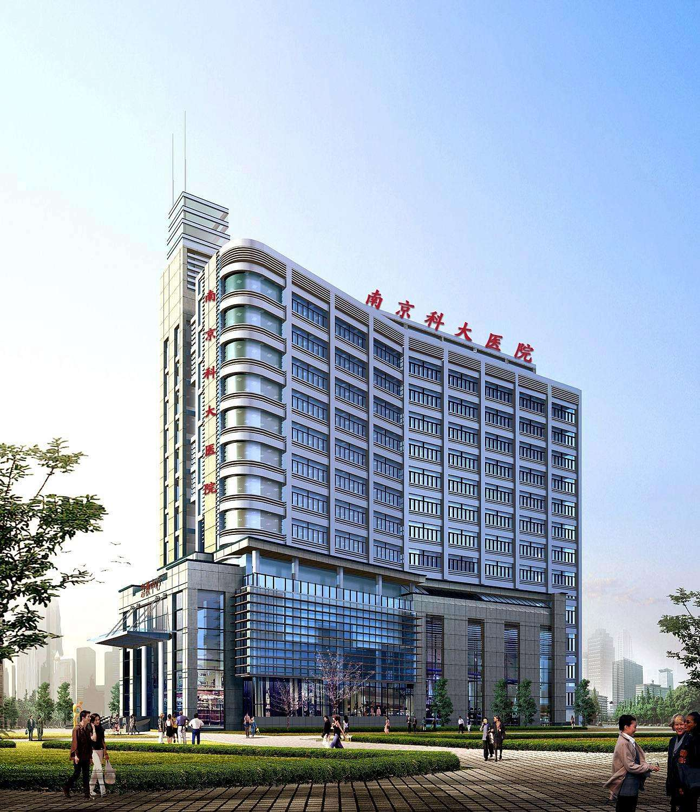

- 1.2017年浙江省政府十方面民生实事网上投票 2. 2017年全省结核病防治业务工作会议在杭召开第十二届中日健康科学研讨会隆重开幕
- 3. 第十二届中日健康科学研讨会隆重开幕 4. 医养结合《实施意见》解读新闻发布会召开
- 5. 2017年浙江省政府十方面民生实事网上投票 6.3月5日、6日放假
- 7. 2017年全省结核病防治业务工作会议在杭召开第十二届中日健康科学研讨会隆重开幕 8. 第十二届中日健康科学研讨会隆重开幕
- 9. 医养结合《实施意见》解读新闻发布会召开 10. 2017年浙江省政府十方面民生实事网上投票
- 1.2017年浙江省政府十方面民生实事网上投票
- 2. 2017年全省结核病防治业务工作会议在杭召开第十二届中日健康科学研讨会隆重开幕
- 3. 第十二届中日健康科学研讨会隆重开幕
- 4. 医养结合《实施意见》解读新闻发布会召开
- 5. 2017年浙江省政府十方面民生实事网上投票
- 6.3月5日、6日放假
- 7. 2017年全省结核病防治业务工作会议在杭召开第十二届中日健康科学研讨会隆重开幕
- 8. 第十二届中日健康科学研讨会隆重开幕
- 9. 医养结合《实施意见》解读新闻发布会召开
- 10. 2017年浙江省政府十方面民生实事网上投票
源自医疗、助力医疗、根植医疗
康邻，以创新科技驱动，以绝对的医学专业为前提和基石，将移动互联网、数据技术应用于医疗领域
用科技，改善医疗服务的效率和连续性；用科技，让优质医疗资源惠及更多的家庭；用科技，让改善大众的传统就医方式”
康邻，帮助您获得更便捷的医疗健康服务与更优质的健康维护方案
便民
为大众提供更方便快捷的医疗健康服务
帮助大众在健康维护中获益
创新
协同现有医疗体系，主动管理式医疗服务
更好的维护大众健康、实现价值医疗
重构
以前瞻视野重构医疗健康服务模式
实现大众健康价值与医生医疗价值回归
我们的案例
用最专业的知识，最优秀的团队，成就最安全可靠的产品
